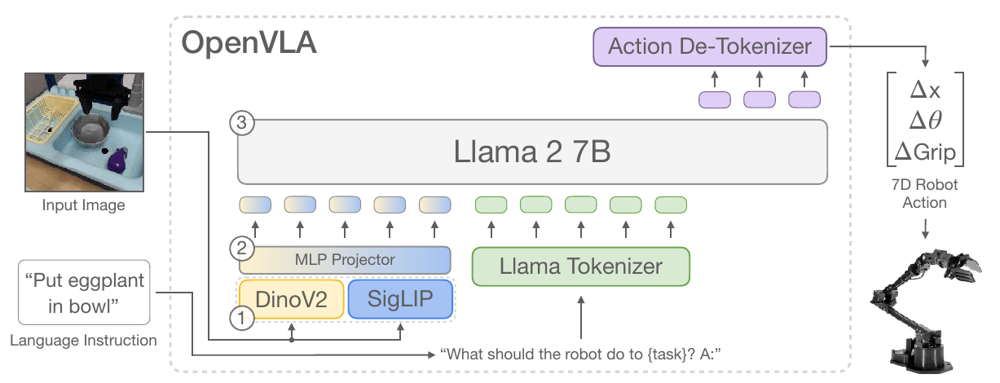
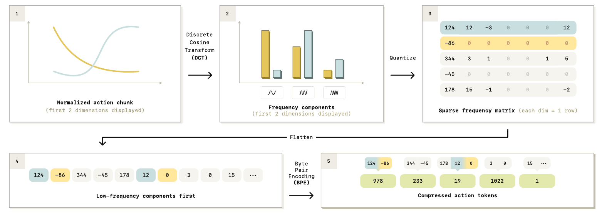
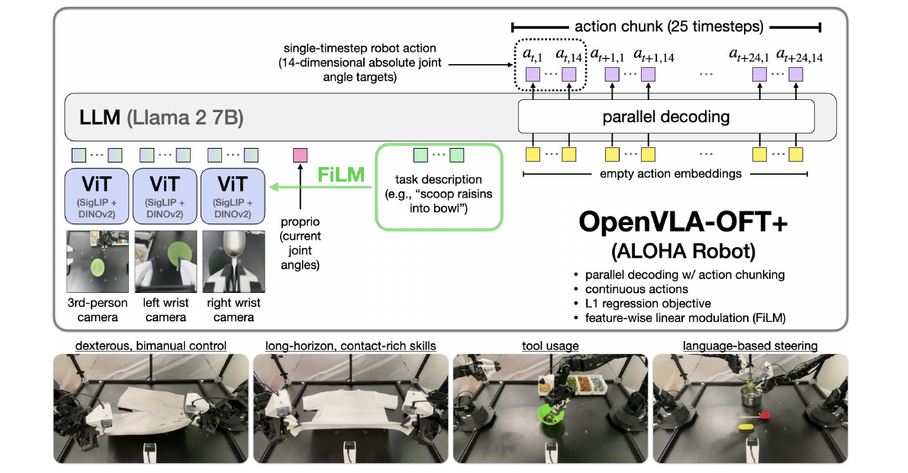
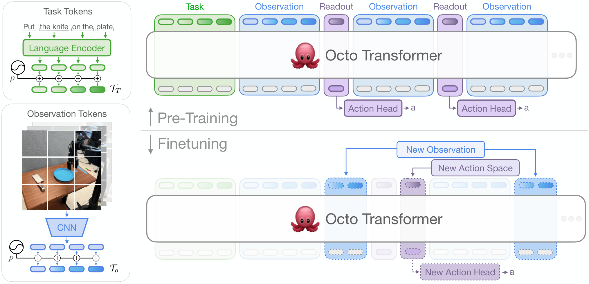
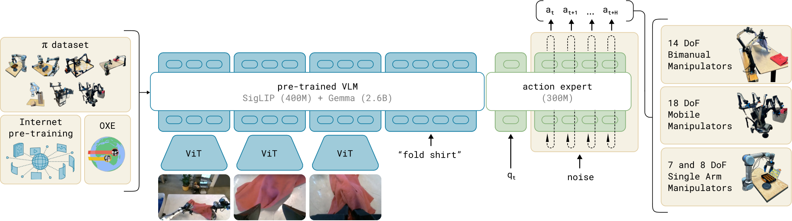

From pixels and instructions to robot commands: five detailed computation paths, explicit tensor dimensions, original paper figures, and worked problems.
0 · The question: how does a sentence become a motor command?
This is a computation guide. For every representative model, follow the tensors through perception, multimodal conditioning, action prediction, decoding, and execution.
A vision–language–action policy implements a conditional map or distribution from observations and instructions to robot actions. The essential differences between variants are not their names: they are what represents an action, which variables are predicted together, how uncertainty is modeled, and which computation must be repeated at inference. A frozen vision encoder, a pretrained VLM, an action expert and a robot controller are distinct components. Their input and output interfaces need to match.
Here t is the physical observation index; W is the history length; V the number of cameras; ℓ the language instruction; s proprioceptive state; H the predicted action horizon; and Da the robot's action dimension. The model may predict H future actions but execute only M≤H before observing again. A diffusion timestep or flow integration time is a separate variable from physical robot time.
How to use this guide
Read the common tensor grammar first. Then follow OpenVLA → FAST → OpenVLA-OFT → Octo → π₀, comparing the same interfaces in each. Shapes marked verified configuration come from a named checkpoint or source snapshot; values marked worked example are chosen for arithmetic. Variable dimensions stay symbolic when camera count, task tokenization, robot embodiment or configuration can change. Source snapshots are dated 27 September 2026. This guide focuses on representative mechanisms rather than claiming every VLA uses these exact settings.
Repeated integration steps through an action expert
The first two rows are subtypes of one family. FAST changes the action representation before the language model sees it. Octo is a language-conditioned generalist robot policy, not a pretrained internet-VLM backbone with an attached action head; it is included to make the diffusion computation concrete without obscuring that architectural distinction. The original papers and implementations for each row are linked in its walkthrough.
These are independent design axes
Conditioning: an observation transformer with a language encoder, a pretrained VLM, or separate perception and action networks.
Fusion: concatenate visual/text tokens, use cross-attention, or let prefix and action tokens share attention while using different weights.
Action representation: scalar bins, compressed token sequences, continuous vectors, or a learned latent representation.
Prediction rule: autoregression, direct regression, diffusion, or flow integration.
Execution: single-action feedback, receding-horizon chunks, or asynchronous chunk replacement.
Consequently, “action expert,” “action chunking,” “reasoning VLA” and “diffusion VLA” are not mutually exclusive categories. Hierarchical language planning can sit above any low-level action generator. ACT's latent-variable action-chunk decoder is a useful related architecture, but its original formulation is not itself a language-grounded VLA. See the robotics guide for that wider historical context.
Original computational map. The inputs can look identical while the output representation, loss and sequential work differ substantially.
2 · Tensor grammar: the common operations
2.1 Name the axes before tracing the network
Symbol
Meaning
Typical tensor
B
Batch of independent training examples / requests
Every tensor normally starts with B
W, V
Observation history and cameras per observation
Images [B,W,V,3,R,R]
P
Patch tokens per image
Image features [B,W,V,P,dv]
L, Nc
Language tokens and total conditioning tokens
Context [B,Nc,dmodel]
H, Da, Ds
Action horizon, physical action width, physical state width
Do not confuse an axis with a semantic unit. One token may represent one image patch, one action scalar, one timestep's entire action, or several compressed coefficients. The token count K can equal Da, HDa, H, or a data-dependent length; the model determines which.
2.2 Image patches and two different kinds of concatenation
For a square image of side R and patch side p, an ordinary nonoverlapping patch projection creates (R/p)² tokens, excluding any class token or pooling. A learned linear map transforms each flattened patch; a vision transformer preserves the patch-token axis unless its architecture explicitly merges tokens.
Feature concatenation combines two encoders of the same image along the last axis: [B,P,d₁] and [B,P,d₂] become [B,P,d₁+d₂]. Camera concatenation combines token sequences: V tensors [B,P,d] become [B,VP,d]. Confusing these operations doubles the wrong dimension and produces an incorrect attention-cost estimate. A projector acts on feature width; it normally does not change the number of patches.
2.3 Linear layers and attention: hidden width is not necessarily head width × head count
In grouped-query attention, each group of query heads shares a KV head; the K/V broadcast above is logical, not a requirement to store repeated copies. WQ can map dmodel to hqdk even if these widths differ. Likewise, WO maps the concatenated head width back to dmodel. π₀'s expert below is a concrete example. Efficient attention kernels need not materialize S, although its logical shape is essential to understanding the mask.
2.4 What an attention mask actually guarantees
A mask answers “which keys can this query use?” It does not itself decide which outputs need a serial sampling loop. During teacher forcing, all ground-truth input tokens are known, so a causal decoder evaluates their conditional distributions together. At inference, a generated token must exist before it can condition the next autoregressive token. By contrast, fixed action placeholders or a complete noisy action chunk are already known, so all their hidden states can be computed together—even when some internal attention is causal.
Mij={0,−∞,query i may read key j,otherwise.
The method-specific sections distinguish a target-action label, an input placeholder, a noisy action and an accepted physical command. These objects may have identical shapes and entirely different meanings.
The first form uses bounds or dataset quantiles; the second uses mean and standard deviation. They are alternatives, not interchangeable steps. Follow the checkpoint's normalization statistics, dimension masks, action convention and gripper handling. Da=7 often denotes a single-arm end-effector command plus gripper, while a bimanual joint policy can have a different width and physical meaning. Padding a 7-dimensional command to width 32 changes the model interface, not the number of robot joints.
3 · Scalar-token autoregression: OpenVLA, one action coordinate at a time
Core idea. OpenVLA projects visual features into a language-model sequence and predicts discretized action coordinates as autoregressive tokens. Decoding requires the matching bin convention and inverse action normalization to recover executable commands.
Representative: the original openvla/openvla-7b checkpoint, not OpenVLA-OFT. Its control output is a single action vector; the common 7-dimensional embodiment uses translation, rotation and gripper coordinates. The equations below generalize to action dimension D. A training example contains an image, instruction and expert action. A control tick runs the vision encoders once, then autoregressively predicts D action tokens. Checkpoint dimensions and implementation details are verified in the official config and model code.

Read the arrows: image features join language in the LLM embedding space; action decoding happens after the LLM vocabulary prediction. The two image encoders describe the same patches, so fusion expands feature width, not patch count. Original OpenVLA, Fig. 2; Online paper.
1. Image preprocessing and patch features
The processor produces two differently normalized views of the same RGB image and stacks them as [B,6,224,224]. Each backbone receives [B,3,224,224]. Both use 14×14 patches, giving 16×16=256 patch positions. DINOv2 ViT-L contributes width 1024 and SigLIP So400m contributes width 1152. The implementation takes second-to-last-layer patch features; classification/register tokens are not additional output patch positions. See the DINOv2 feature config and SigLIP architecture definition.
The released fused projector contains three linear layers, with GELU after the first two. This is an implementation-level distinction worth preserving when a high-level diagram just says “MLP projector.” Each patch is projected independently: no new sequence positions are created.
Let T be the number of language-prefix tokens including BOS and the exact prompt suffix expected by the checkpoint. Text lookup gives [B,T,4096]. The implementation inserts visual embeddings immediately after BOS. Therefore a prefix has L=T+256 positions. In training, append the D action-token targets and the configured end marker; with one end token, the full length is L+D+1. Teacher forcing makes all training positions computable in one forward pass; generation still has sequential dependence across action coordinates.
Inside a Llama-2-7B attention layer, the 4096-wide Q/K/V projections are reshaped to [B,32,S,128], where S is the current sequence length. Attention scores have logical shape [B,32,S,S] during full teacher-forced training, followed by attention output [B,S,4096]. Fused kernels need not materialize the full score tensor. At cached decoding step j, the query sequence length is one and keys contain the prefix and previous action tokens.
4. Map a real-valued target to a token: exact endpoint semantics
For dimensions enabled by the dataset's normalization mask, use dataset-specific 1st/99th percentiles. Gripper or other unnormalized dimensions follow the mask, so never apply position units to every coordinate. The released action tokenizer builds 256 edge values, not 256 reconstruction centers:
Thus action token IDs occupy 31744–31999. Do not replace 32000 by the padded model vocabulary size 32064. Decoding computes i=clip(32000−z−1,0,254), then returns the center (ei+ei+1)/2. There are only 255 different centers; the top endpoint and last interval share the final center. This small off-by-one is visible in released code and matters when reproducing exact outputs.
Worked scalar example. Suppose a translation coordinate has quantiles −0.1 m and +0.1 m and its true command is +0.05 m. Normalization gives 0.5. This lies between edges 191 and 192, so digitize returns 192 and the action token is 31808. Its center is approximately 0.5019608; denormalization gives 0.05019608 m. The representation error is about 0.196 mm. This example concerns a translation coordinate only; rotations and gripper have their own units and normalization.
5. Predict, shift labels correctly, and recover physical units
The LM produces logits [B,S,32064]. The hidden state at the last prefix position predicts the first action token; the hidden state receiving z1 predicts z2. Applying the loss at the same position as the input target leaks the answer. Prompt and image labels are ignored; action labels and any trained end marker supply the loss. At inference, the wrapper generates D tokens, recovers normalized centers and applies:
ad=q0.01,d+2ad+1(q0.99,d−q0.01,d)
Concrete shape trace: choose illustrative batch B=2, prefix T=20 and D=7. Prefix embeddings are [2,276,4096]; a teacher-forced action+EOS sequence has [2,284,4096]; generation yields seven action IDs per example and finally [2,7] real-valued controls. These example prefix lengths are not fixed model constants.
Stage
Shape
Critical interpretation
Two preprocessed image views
[B,6,224,224]
Same camera image, different vision normalization
Fused patches
[B,256,2176]
Concatenate channels, not 512 tokens
Projected visual sequence
[B,256,4096]
Shares LLM hidden width
Prefix
[B,T+256,4096]
Visual positions inserted after BOS
One generation step
[B,1,32064]
Full LM vocabulary logits
Final action
[B,D]
One coordinate per generated token
Architectural consequence: replacing continuous control by scalar tokens inherits the pretrained language decoder and a simple categorical loss, but extending a scalar tokenizer to horizon H costs HD generated tokens. Strong correlation between successive high-rate actions motivates the next subtype.
4 · Compressed-token autoregression: FAST with π₀-FAST
Core idea. FAST applies a temporal DCT to each action coordinate, quantizes the coefficients, and compresses their serialized sequence with BPE. π₀-FAST predicts those trajectory tokens autoregressively and reverses the encoding to recover an action chunk.
Separate two objects: FAST is an action tokenizer; π₀-FAST is a VLA policy that predicts its tokens. FAST changes the representation of a whole action chunk. It does not denoise an action trajectory at inference, and its BPE token IDs are not physical action coordinates. The following follows the FAST paper, released tokenizer, and π₀-FAST implementation.

Follow one row: the picture stores each action dimension as a row, while the code stores each timestep/frequency as a row. Both flatten by frequency first: all coordinates' DC coefficients, then their first-frequency coefficients, and so on. Quantization creates many repeated symbols; BPE combines common sequences. Original FAST, Fig. 4; Online paper.
1. Start from a normalized action chunk
A∈RB×H×D⟶A∈RB×H×D
Here H is the prediction horizon and D is the action width after embodiment transforms and any padding. The tokenizer receives already normalized actions; it does not estimate dataset statistics itself. The paper uses robust percentile normalization. Released policy pipelines must use their checkpoint's normalization assets and masks; changing normalization changes every downstream token.
2. DCT only along time, independently for each coordinate
This is SciPy's orthonormal type-II DCT, dct(action_chunk, axis=1, norm="ortho"). The tensor shape does not shrink: the time axis becomes a frequency axis. The default scaling factor is s=10; NumPy's rounding uses ties-to-even. Smooth trajectories tend to have small high-frequency coefficients, which often round to zero. FAST retains the coefficient positions; it does not simply delete high frequencies.
Worked DCT example. Take one normalized coordinate over two timesteps: [0.1, 0.3]. The orthonormal DCT yields [0.2828427, −0.1414214]. With scale 10, rounding gives integer coefficients [3, −1]. Decode by dividing by 10 and applying inverse DCT: [0.1414214, 0.2828427]. Their RMSE is about 0.03170, below 1/(2s)=0.05. No BPE merge changes these reconstructed values. This small example isolates tokenizer error from any neural prediction error.
3. Serialize, then compress with learned BPE merges
The code flattens an [H,D] array in row-major order. It shifts integers by the fitted min_token, maps them to character symbols, and applies a trained BPE tokenizer. For well-supported coefficients, this shift is invertible. The implementation clips shifted negative values to zero, so out-of-range coefficients can introduce an additional loss beyond rounding. Each example produces a variable-length token list zb of length Kb. Batches pad these lists and maintain validity masks; K is not a fixed new tensor axis determined just by H and D.
A single BPE token can cover several coefficient symbols, possibly across coordinates. The learned merge vocabulary determines the token count. “30–60 tokens per chunk” is an observed regime, not a shape contract or an upper bound. FAST+ is a universal trained tokenizer; retraining BPE gives another tokenizer with the same algorithm, not identical token IDs.
4. Build π₀-FAST's observation prefix and autoregressive suffix
The default released model uses SigLIP So400m/14 and a Gemma-2B-width language backbone. For 224×224 inputs, each valid camera gives 256 projected image tokens of width 2048. With C cameras and T text/state tokens, the conceptual prefix shape is [B,256C+T,2048]. Proprioceptive state is discretized and written into the text prefix; it is not a separate continuous action-expert token in this variant. The implementation defines a bidirectional image/text prefix and a causal output suffix. See Gemma config and policy token packing.
FAST token z is mapped into reserved PaliGemma token positions by V_tokenizer − 1 − 128 − z; the last 128 tokenizer tokens are skipped. The model's padded output vocabulary has 257152 logits. Tokenizer vocabulary size and padded output-head size are different quantities, so the mapping must use the tokenizer's own V. Training shifts labels by one and masks loss to the suffix. Inference prefills the prefix once, caches it, and generates a variable-length suffix until termination or the configured limit.
Concrete implementation example: the source defaults specify action horizon 32, padded action width 32, text-token buffer 250 and three camera keys. Thus an unpadded physical 7-DoF task might first be adapted into the checkpoint's padded action representation. With all three 224×224 cameras, the packed model input buffer is [B,768+250,2048], with masks identifying valid tokens. These are implementation defaults, not claims that every π₀-FAST checkpoint predicts the same horizon or always sees three real cameras.
5. Invert the representation and execute a chunk prefix
The decoder must know H and D. A generated sequence that does not expand to exactly HD coefficients is malformed; the reference tokenizer catches decode errors and substitutes zeros. That fallback is not evidence that arbitrary token sequences define valid robot controls. After embodiment conversion, the controller executes the chosen number of action steps and observes again. Executing only the first few steps is receding-horizon control; it does not change the fact that the VLA generated a whole chunk.
What is lossy, and why does compression help?
BPE reconstructs the represented integer sequence exactly. Rounding is lossy. Because the DCT is orthonormal, Parseval's identity directly relates coefficient error to trajectory error. Assuming no clipping, no malformed token sequence, and exact prediction of the quantized coefficients:
∥A−A∥F2=∥C−C∥F2≤4s2HD,RMSE≤2s1
This bounds tokenizer reconstruction error, not policy prediction error. A wrong BPE token can affect many coefficients, and inverse DCT spreads coefficient errors over time. Token compression lowers autoregressive steps from HD to K, but end-to-end speedup also depends on vision encoding, prefix prefill, vocabulary projection, caching and control frequency.
Question
OpenVLA scalar tokens
FAST chunk tokens
Meaning of one generated token
Quantized value of one coordinate
Learned string of quantized frequency coefficients
Output shape after decoding
[B,D] in original checkpoint
[B,H,D]
Serial generation count
D; naive chunk extension HD
Variable K plus formatting/termination
Source of representation loss
Scalar quantization and clipping
DCT-coefficient rounding, plus possible range clipping
Does training require serial forward passes?
No: teacher forcing
No: teacher forcing
What breaks exact reproduction?
Wrong vocabulary offset, bin edges or normalization
Wrong flatten order, DCT norm, scale, BPE vocabulary or H/D
5 · Parallel continuous regression: OpenVLA-OFT
Core idea. OpenVLA-OFT places action-query positions in a bidirectional prediction block and maps their hidden states to continuous actions in parallel. Action chunking and the output reshape remove the token-by-token motor decoding dependency.
OFT changes the action interface of OpenVLA while retaining its pretrained image-language backbone. Choose the paper’s LIBERO setting as the concrete example: chunk horizon H=8, action dimension da=7, decoder width d=4096. Camera count C and prompt length L vary. The bimanual ALOHA setting instead uses H=25 and da=14. These are distinct configurations, not interchangeable reshape constants. Paper · Official action head · Official forward pass.

Original OFT paper, Fig. 1, cropped from PDF page 2. This figure depicts the ALOHA OFT+ configuration (three cameras, 25×14 outputs, FiLM), whereas the numerical walkthrough below uses the smaller LIBERO output shape. Each yellow placeholder represents a scalar action coordinate; the MLP combines coordinates belonging to the same timestep.
1. Construct the input sequence
Each camera is passed through the shared fused DINOv2–SigLIP encoder. Each branch gives 256 aligned patches; concatenate their feature axes, then project to decoder width. Concatenate cameras along the token axis. Thus additional cameras increase sequence length, not decoder width. A low-dimensional proprioceptive vector, when enabled, passes through a two-layer GELU MLP and contributes one 4096-wide token.
Append H·da empty action embeddings. They contain zeros, not ground-truth actions; their positions distinguish them. Include required prompt and special/stop tokens exactly as the implementation does. Let L include all nonvisual, nonproprioceptive, nonaction tokens, including those special tokens, and let δp∈{0,1} indicate proprioception.
Exact mask distinction: the OFT paper explicitly replaces causal attention with bidirectional attention. Its repository requires a modified Transformers implementation; inspecting only the wrapper’s call to language_model would miss this change. Nonpadding prompt, visual, and action-placeholder positions can exchange information. This is safe because future ground-truth actions are never provided as inputs. Parallel prediction alone does not mathematically require a bidirectional mask; bidirectionality is the particular OFT design.
These head dimensions follow Llama-2 7B (32 heads, 4096/32=128). Each decoder block preserves [B,N,4096]. Select the final hidden states belonging to the Hda action positions. For LIBERO this is [B,56,4096]. Do not feed a vocabulary projection or an argmax into the continuous head.
3. The easily missed reshape before the MLP
Operation
Symbolic shape
LIBERO example
Selected action hidden states
[B,H·da,4096]
[B,56,4096]
Group da coordinate slots for each action timestep
The shared head runs independently over the H positions, but its inputs already mix all positions through the transformer. This is not one scalar linear projection independently applied to each placeholder. For the initial projection alone, the LIBERO head has 28,672×4,096=117,440,512 weight parameters (excluding bias): the grouping matters for both implementation and memory.
Normalize the demonstrated actions using training-dataset statistics. Build the observation/prompt sequence and zero placeholders in both training and inference.
Run image encoder, decoder, grouping reshape and continuous head. Compute mean L1 against all H target actions; update the configured trainable parameters (the paper studies LoRA fine-tuning).
At inference, the same single forward pass yields H normalized actions. Invert the stored normalization and apply the robot-specific gripper convention.
Execute a chosen prefix of the chunk before observing again. Predicting H actions does not require executing all H open-loop; the execution horizon is a controller decision.
Why it is fast, and what it gives up. Scalar-token autoregression has roughly H·da sequential output decisions; OFT has one decoder evaluation over all slots. That evaluation is wider and uses attention across a longer sequence, so latency does not literally improve by H·da. L1 regression is deterministic and its population optimum is a coordinatewise conditional median. If equally plausible demonstrations go left or right around an obstacle, a point estimate can fall between modes. Bidirectional attention improves joint features, but does not make a deterministic output head a sampler of a multimodal action distribution.
OFT+ adds FiLM inside the two vision transformers: average the instruction embeddings into a language condition; obtain one scale and bias vector per visual block; broadcast them over patches. If a block activation is [B,256,dv], scale and bias are [B,1,dv], and the result remains [B,256,dv]. This conditioning is additional to the later image-language fusion in the decoder.
F=(1+γ(etext))⊙F+β(etext).
6 · Conditional diffusion action head: Octo
Core idea. Octo builds observation, task, and readout token groups in a Transformer, then conditions a diffusion action head on the resulting representation. Training predicts noise at one sampled level; inference reuses the conditioning while repeatedly denoising the action chunk.
Octo is a language/image-goal-conditioned generalist robot policy, with a frozen T5 language encoder, learned visual tokenizers, a transformer and a diffusion action head. It is a valuable representative of the conditional diffusion interface, but is not a pretrained autoregressive VLM fine-tuned into a VLA in the strict OpenVLA/π₀ sense. The walkthrough follows the official pretraining configuration and action-head implementation; checkpoint-specific overrides should always be checked. Paper · Pretraining configuration · Action head · Diffusion network.

Original Octo paper architecture figure. Read left to right: observations and task tokens enter the transformer; a separate action readout extracts context; a small conditional diffusion head repeatedly denoises actions. The main transformer is evaluated once per policy call, not once per denoising step.
1. Keep observation history and predicted horizon separate
Use W=2 observed timesteps, H=4 predicted actions per observation timestep, da=7 action coordinates, and a concrete Octo-Small backbone width d=384 (12 layers, 6 heads, head width 64, FFN width 1536). The corresponding Base backbone uses d=768, 12 heads, FFN width 3072. W and H describe different axes: training targets have shape [B,W,H,7], while inference returns the chunk associated with the latest observation, [B,H,7].
2. Turn each camera and the instruction into token groups
The official pretraining configuration resizes the primary camera to 256×256 and wrist camera to 128×128. Its SmallStem16 has four 3×3 stride-2 convolutions with channel widths 32,96,192,384, followed by a 1×1 projection to 512 channels. This produces 256 primary tokens and 64 wrist tokens at each observed timestep. An additional learned projection maps 512 to backbone width d. The visual stem is a convolutional tokenizer, not the pretrained SigLIP–DINO encoder used by OpenVLA.
Tensor or operation
Octo-Small shape
Explanation
Primary RGB history
[B,2,256,256,3]
Channel-last JAX convention
Observation plus repeated goal-image channels
[B,2,256,256,6]
Goal image concatenates on channels; zeros occupy absent goal channels in this tokenizer configuration
Configured maximum language length 16; padded tokens masked
One learned action readout at each observed timestep
[B,2,1,384]
One context token, not four action tokens
The configuration sets repeat_task_tokens=True: task tokens exist as a prefix and are also repeated as observation-group task tokens at each timestep. With both cameras present and all 16 language slots allocated, the dense allocated sequence length is therefore 16+2·(256+64+16+1)=690. Masking absent cameras/history/text changes valid attention entries; some omitted tokenizer groups can also change the allocated length. Do not silently count only 256+64+1 per timestep.
3. Temporal attention and readout
Octo uses a block-causal temporal mask: observations can attend to task tokens and observation tokens at the same or earlier observed timestep; they cannot attend to readout tokens. The action readout can attend to tasks, observations no later than itself, and its own readout group at current/earlier timesteps. Causality applies to observation time, not to an arbitrary left-to-right ordering of image patches at the same time. Different readout types remain isolated. Official group construction and attention rules.
The default diffusion head sets use_map=False, so mean pooling over the one readout token simply removes its singleton axis. The transformer output is cached as conditioning while the small head denoises. Unlike OFT, the transformer does not reserve H·da scalar action placeholders.
4. Diffusion training: one randomly chosen noise level, not a full reverse chain
Flatten H and action-coordinate axes: A∈[B,W,H,7] becomes x₀∈[B,W,28]. The head uses a cosine schedule with K=20 diffusion steps by default, maximum normalized action magnitude 5, time-feature width 32, hidden width 256, and three residual blocks. In code the training tensors have an additional leading ndiffusion samples=1 axis; below it is omitted for clarity.
Draw k independently for each [batch,history] item; k has shape [B,W,1], and ε and xk both have shape [B,W,28]. The closed-form corruption jumps directly to k; no k-step forward simulation is required.
Small diffusion head operation
Shape
Learned Fourier features of k: 16 learned frequencies, concatenate cosine and sine
[B,W,1] → [B,W,32]
Time MLP 32 → 64 → 32
[B,W,32]
Concatenate time, observation condition c and noisy action xk
[B,W,32+384+28] = [B,W,444]
Dense to 256; three residual blocks, each LN → 256→1024 → swish →1024→256 + residual
The implementation combines action-coordinate and history padding masks, then additionally scales its continuous loss by action dimension. This constant scaling changes gradient magnitude but not the optimum. Padded history, end-of-trajectory action positions and nonexistent embodiment coordinates must not become supervised robot commands.
5. Inference: twenty cheap head evaluations after one expensive encoder
Compute image, instruction and transformer readout context once.
Sample xK−1∼N(0,I) with shape [B,W,28].
For k=19,…,0, predict ε from the fixed context and current noisy action, then apply the update below.
Reshape [B,W,28] to [B,W,4,7], select the latest history index to obtain [B,4,7], and undo action normalization. Execute the chosen prefix, then refresh observations.
This is the actual default Octo MLP-head update (including √β noise, rather than substituting a different posterior-variance sampler). The code clips each iterate to ±5 and restores appropriately scaled noise in masked embodiment dimensions. At k=0 no fresh noise is added. Index “−1” here denotes the final clean estimate, not an extra trainable diffusion level.
Why conditional diffusion is different from regression
L1 produces one deterministic vector for a condition. Diffusion starts from different random vectors and learns to move their mass toward demonstrated action modes; multiple valid motion strategies can therefore coexist. The noise predictor’s squared-error optimum is a conditional mean of noise at a specified noisy action, not a direct average of clean actions for the observation. Conditioning on xk distinguishes noisy neighborhoods around separate modes. Randomness and iterative sampling support multimodality, but do not guarantee safe robot actions or better success on every dataset.
The score identity follows by differentiating the Gaussian corruption density and averaging over its posterior x₀. It explains why learning noise can recover the geometry of a multimodal conditional density. Compute also differs: Octo costs approximately one context encoder plus K small MLP-head calls. “Diffusion VLA takes K full VLM passes” would be incorrect for this architecture; it can be true for other designs that put noisy actions inside the main backbone.
7 · Continuous flow matching: π₀, from pixels to an entire action chunk
Core idea. π₀ couples a pretrained visual-language prefix to a separate action expert trained by flow matching. Its attention mask lets noisy action tokens use the fixed prefix and one another while preserving a prefix that can be cached across solver steps.
The distinguishing computational decision is to give each future control timestep one continuous vector token. The network revises all horizon positions together. It does not generate one vocabulary symbol for each scalar motor command. π₀ adds a smaller action expert to a pretrained PaliGemma backbone; the experts exchange information through attention while retaining different hidden widths. The original paper uses a horizon of 50 and ten numerical integration steps. π₀ paper, §IV and Appendix A.

Original π₀ Figure 3. Read the architecture as two interacting token streams: images and language enter the large backbone, while noisy actions enter the smaller expert. The following trace expands the box labelled action expert into actual tensor operations. Source: Physical Intelligence, π₀ (2024).
A reproducible configuration, not a universal VLA shape
This trace follows the JAX implementation of original π₀, with pi05=False, pinned to OpenPI commit 215abfb217dbac7d5f1273282331b9b1866c0479. We choose batch size 2 and all three image slots valid. Language is padded to 48 slots, so the physical prefix length is 816 even if the actual instruction is shorter. Action/state width 32 is a model interface; a particular robot can use fewer physical coordinates. Configuration and input specification.
Query heads; KV heads; head width, in both streams
8; 1; 256
1. Image patches and language form the fixed prefix
Each camera is processed by the same SigLIP So400m/14 image encoder: patch convolution, learned positional embeddings, 27 Transformer blocks, no pooling, and a projection into the language width. Its vision hidden width is 1152, with 16 attention heads and a 4304-wide feed-forward layer. The 256 patch positions survive the encoder. SigLIP implementation.
The patch convolution is equivalent to extracting a 588-component RGB patch and multiplying by a 588×1152 matrix. That is an algebraic equivalence, not a claim that the implementation materializes an im2col tensor. The three image outputs occupy 768 prefix positions. Token IDs occupy 48 more positions:
Integer token IDs index an embedding table; no one-hot tensor needs to be allocated. Prefix masks distinguish valid image/language tokens from padding. The prefix is bidirectional: this is a conditioning encoder inside a prefix-style Transformer, so a text token can attend to all valid image tokens and other conditioning tokens.
2. Construct a noisy action chunk and inject the flow time
Let A be a normalized demonstration chunk and ε independent Gaussian noise, each shaped [2,50,32]. We use the released code’s time convention: t=1 is noise and t=0 is data. The training path and its derivative are therefore:
Sign check: because sampling moves toward decreasing t, a negative time step multiplied by ε−A moves toward A. The paper and code use different time orientations; copying a velocity target from one and an integration direction from the other is an implementation bug. Our formulas consistently follow the code. π₀ loss and sampling implementation.
Here the matrix convention is column vectors inside the equation; tables use batch-first arrays. Bias terms do not change shapes. Time t is a denoising coordinate, not the robot’s control timestep h.
3. Different hidden widths, compatible attention coordinates
The shared attention space is the central implementation detail. Both streams use 18 blocks, eight query heads, one KV head and head width 256. Each stream owns separate projections and MLP weights. Their hidden widths need not match because attention products operate after projection. The model uses multi-query attention, the one-KV-head special case of grouped-query attention. Gemma configuration and attention.
The expert’s query projection expands 1024 features into 8×256=2048 features. It would be incorrect to infer head width 1024/8=128. Concatenation happens only after compatible head dimensions are obtained. RoPE is applied to Q and K, and the logits are scaled by 1/√256=1/16.
The implementation retains a singleton KV-group axis in logits, [B,1,8,Tq,Tk]; the equation drops that singleton. Attention outputs split by token stream, then each stream applies its own output projection: prefix 2048→2048 and suffix 2048→1024. Residuals therefore have matching shapes. The VLM gated MLP uses 16384 hidden features; the expert uses 4096. A block normalizes before attention, adds the attention residual, normalizes before the gated MLP, and adds its residual.
4. The exact three-block attention mask
Ignoring padding for the moment, rows are query groups and columns are key groups. Ones mean allowed attention:
All future action positions attend to each other. The state can read the prefix but cannot read noisy actions. Prefix states cannot depend on either state or action tokens, which permits their KV tensors to be reused unchanged across solver steps. A padding mask further removes invalid query/key positions. All-pairs action attention is legal because these are noisy inputs for a joint denoising problem, not teacher-forced ground-truth future actions.
5. Training target, padding and normalization
[2,51,1024]take last 50[2,50,1024]Linear1024→32Vθ:[2,50,32].
Do not silently replace the released loss with a masked one. The cited π₀ model function averages the entire padded action dimension and returns [B,H] losses. The data transform zero-pads states/actions to width 32; that is not the same operation as masking padded coordinates out of the loss. The padded coordinates still receive Gaussian noise during flow training. A valid-coordinate mask is a possible alternative training design, but would alter this trace. Normalization, unnormalization and padding transforms.
After sampling, the robot-specific adapter selects the physical action coordinates and reverses training normalization. For ordinary mean/std normalization the inverse is a physical action = σ times normalized action + μ. Quantile-normalized datasets use their corresponding inverse transform instead. Delta-action conventions may additionally require adding the current state. These adapter choices determine the units sent to actuators; the 32 neural outputs alone do not specify motor semantics.
6. Sampling and what actually gets cached
Compute the image/language prefix once and retain K,V at each of 18 layers. Start the action chunk with Gaussian noise. Each iteration embeds the current chunk and state, evaluates only the expert queries using cached prefix K,V, predicts the vector field and performs an Euler update. In this implementation the state token belongs to the recomputed suffix even though its input is unchanged.
All tensors X and V above have shape [2,50,32]. No token sequence grows across solver iterations. Each expert layer uses suffix queries [2,51,8,256] and total keys [2,867,1,256], so its logical logits contain 2×8×51×867 elements. The ten evaluations refine the same 1600 scalars per example. The returned 50-step chunk is not necessarily executed entirely before replanning.
This derived BF16 cache size counts K and V only. It excludes weights, image activations, temporary expert K/V, allocator overhead and logits. The memory benefit comes from one KV head and prefix reuse; it does not imply that the full robot policy fits in 29 MiB. Similarly, ten expert passes are not ten full image-encoder/VLM passes.
Variant boundary: π₀ versus π₀.₅
The pinned configuration makes two important changes when pi05=True: state is encoded in the text prefix and the flow time conditions the expert through adaptive RMS normalization. The default prompt length becomes 200. Consequently the original π₀ trace’s separate state token and action/time concatenation MLP should not be copied into π₀.₅ diagrams. Keep variant names attached to tensor traces.
8 · Compare computation, losses, and the control clock
What changes when the output head changes?
Representative
Training target
Inference dependency
What can be reused?
Main structural tradeoff
OpenVLA
Categorical action tokens
D serial vocabulary emissions for one action
Vision features and causal prefix KV
Simple pretrained-LM interface; scalar quantization and serial coordinates
π₀-FAST
Compressed coefficient tokens
K variable serial emissions for a chunk
Vision and prefix KV
Shorter sequences for compressible motion; tokenizer and malformed-output errors
OpenVLA-OFT
Continuous chunk, L1 loss
One parallel action-slot forward pass
No iterative denoising needed
Low sequential depth; deterministic prediction does not explicitly sample conditional modes
Octo diffusion head
Injected Gaussian noise
Repeated small-head reverse steps
Observation transformer/readout representation
Joint stochastic chunks; repeated denoiser work
π₀ flow expert
Path velocity
Repeated action-expert solver steps
Bidirectional observation-prefix KV
Joint continuous chunks and rich conditioning; expert and integration cost
This table compares mechanisms, not benchmark winners. Training data, embodiment, pretraining, controller, task and inference budget differ. A seven-step autoregressive decoder can be slower than ten small denoising steps; counting steps without specifying which network runs at each step is misleading. The OFT experiments are particularly useful for controlled choices inside one backbone, whereas cross-paper robot success rates are not a controlled head comparison.
Why deterministic regression can average incompatible demonstrations
Fix an observation o and one action coordinate. Minimizing squared prediction error gives a conditional mean. Minimizing absolute error gives a conditional median. To see this, differentiate the conditional risks (for L1, assume a continuous distribution here):
Thus L2 chooses the mean and L1 chooses a median; at atoms use the subgradient condition. Neither objective automatically chooses an actual joint trajectory mode. For demonstrations (0,1) and (1,0) with equal probability, coordinatewise L1 admits any point in the square [0,1]², including (0.5,0.5), which is absent from the data. L2 uniquely chooses (0.5,0.5). This is a statement about the ideal objective, not a prediction that every trained regression policy fails. Richer observations can remove ambiguity, and consistent demonstrations can make deterministic regression effective.
Autoregressive, diffusion and flow models can represent conditional variation, but their ability to do so does not establish calibration or safe commitment to a mode. A sampled action chunk must still be coherent, and resampling a different mode every control tick can cause oscillation. Horizon, conditioning history and replanning policy matter alongside the loss.
Where prefix caching saves work
Let N be observation-prefix length, S suffix length, and J the number of solver calls. Suppressing heads, projection widths and feed-forward work, full attention on the combined sequence has quadratic score work. With a prefix that cannot attend to the suffix, its per-layer K/V can be computed once:
Here L is layer count and belement is bytes per stored element. The factor two stores both K and V. This is a score-work estimate, not a measured latency model: fused attention, memory traffic, expert width and MLPs remain important. OFT's fully bidirectional sequence does not have the same immutable-prefix property: prefix states can depend on the action placeholders in each layer. Octo caches an observation representation for a separate head, which is a different reuse mechanism.
Three clocks that must not be confused
A model predicts H action steps, the controller executes one step every Δ seconds, and the policy may replan after only M≤H steps. These define different quantities:
Generating 50 actions in 80 ms is 625 generated action steps per second. If those actions are meant for a 50 Hz controller, they cover one second of motion; the robot does not thereby run closed-loop visual feedback at 625 Hz. A fresh inference every 80 ms supplies at most 12.5 observation-conditioned updates per second before other overhead. Reusing a chunk reduces compute but increases the time between corrections.
Implementation reading order. First fix the checkpoint, preprocessing and embodiment adapter. Next inspect the exact action tensor and normalization mask. Then inspect attention masks, loss shifts, padding masks and the sampling-time convention. Finally trace postprocessing and the controller clock. A matching transformer hidden size does not imply matching robot behavior.
9 · Worked problems: derive first, then reveal
The numerical cases below are teaching configurations unless explicitly identified as released model dimensions. Try writing every intermediate shape before opening the answer.
1. Two backbones versus two cameras
Use B=2, two cameras, 224×224 images and 14×14 patches. Each camera has DINO features of width 1024 and SigLIP features of width 1152. Fuse features, project to width 4096, then concatenate cameras and 16 text tokens. What are all intermediate shapes? Is this the original single-camera OpenVLA checkpoint?
Reveal worked answer
Each backbone has 256 patch positions per camera. For each camera: [2,256,1024] and [2,256,1152] → channel concatenation [2,256,2176] → projection [2,256,4096]. Camera concatenation gives [2,512,4096], then text gives [2,528,4096]. Neither feature fusion nor projection doubles patch count. This is an illustrative multi-camera extension; original OpenVLA's trace above uses one camera.
2. Exact scalar-token decoding
Use OpenVLA's 256 edges and tokenizer offset 32000. For a coordinate with physical quantiles −0.1 m and +0.1 m, find the token and reconstructed command for normalized action 0. What happens at normalized action +1?
Reveal worked answer
Zero lies between edge 127=−1/255 and edge 128=1/255, so digitize returns 128, the token is 31872 and its center is exactly zero. Denormalization gives 0 m. At +1 digitize returns 256, giving token 31744. The decoded index is clipped from 255 to 254, so the center is 254/255 and the physical value is 0.09960784 m. There are 255 centers despite 256 available scalar-token IDs.
3. Teacher forcing and the one-position shift
A prefix occupies 272 positions. Seven action tokens follow, with no EOS in this simplified example. Use zero-based indexing. Which logits predict the actions? What is the full logit tensor for B=2 and vocabulary 32064? Why is one training pass compatible with seven sequential generation steps?
Reveal worked answer
Input length is 279. Actions occupy input positions 272…278, but predictions come from logits at 271…277. The full tensor is [2,279,32064]; only the selected prediction/label pairs contribute action loss. Causal teacher forcing supplies each true earlier token, allowing parallel training. At deployment those earlier actions are unknown until generated.
4. FAST preserves energy, not every coefficient
A chunk has H=16, D=7 and DCT scale s=10. Assuming exact token prediction and no coefficient clipping, bound its squared reconstruction error and RMSE in normalized action units. Can you infer its BPE token count? What happens to the per-coordinate RMSE bound after denormalization with quantile range 0.4 m?
Reveal worked answer
∥A−A∥F2≤4⋅10216⋅7=0.28,RMSE≤0.05.
Each coordinate separately also has RMSE at most 0.05 because its DCT is orthonormal. The physical affine transform multiplies errors by half the quantile range, 0.2 m, giving a 0.01 m per-coordinate RMSE bound. This is not a maximum error at every timestep. BPE length depends on coefficient values and learned merges; H and D alone do not determine it.
5. A diffusion noising calculation
For a two-coordinate action A=(0.5,−0.5), take ε=(1,−1) and cumulative noise schedule ᾱ=0.64. Compute the noisy sample, then reconstruct A using an exact noise prediction. Does the action shape change with the diffusion timestep?
Reveal worked answer
X=0.64A+1−0.64ϵ=(1,−1),A=0.8X−0.6ϵ=(0.5,−0.5).
The tensor remains [B,H,D] (or a deliberately flattened [B,HD] inside an MLP) at every noise level. This algebraic reconstruction illustrates the target; practical reverse diffusion uses the configured schedule and repeated updates, not access to the true noise.
6. OFT grouping and Octo conditioning
For B=2, OFT horizon 8 and action width 7, reshape the 56 action slots of hidden width 4096 into the head input. Count weights in its first linear projection. Separately, for Octo-Small with W=2, H=4 and seven action coordinates, derive the diffusion MLP input width and final returned chunk shape.
Reveal worked answer
OFT: [2,56,4096] → [2,8,7×4096]=[2,8,28672] → first projection [2,8,4096]. The weight matrix has 28672×4096=117,440,512 entries, plus 4096 biases if enabled. Octo: noisy actions [2,2,28], context [2,2,384], time features [2,2,32]; concatenation gives [2,2,444]. After denoising and reshaping, [2,2,4,7] becomes [2,4,7] when selecting the latest observation timestep.
7. reconstruct the attention and cache shapes
Use original π₀ with B=1, two valid images of 224×224, patch size 14, 40 language slots, H=20, and padded action width 32. Assume the model contains exactly these two camera slots. Find (i) prefix and suffix lengths, (ii) expert Q and total K shapes during one cached solver call, (iii) BF16 prefix KV storage across 18 layers, and (iv) the output action tensor. The query/KV head counts and head width are 8/1/256.
Reveal full solution
P=(224/14)2=256,N=2P+40=552,S=1+20=21.
Q is [1,21,8,256]. K and V each contain the cached prefix plus current suffix and are [1,573,1,256]. The singleton KV head broadcasts to eight query heads, not to eight separately stored KV copies.
M=2⋅18⋅1⋅552⋅1⋅256⋅2=10,174,464bytes=9.703125MiB.
The output is [1,20,32]. The 20 future timesteps are predicted jointly during every solver iteration; they are not 640 autoregressive vocabulary emissions.
8. catch the sign error before running a robot
Consider one scalar coordinate. Demonstration action a=2, sampled noise ε=−1 and t=0.6. For the straight path x(t)=(1−t)a+tε: compute x(t), the exact conditional velocity, and one Euler step with Δt=−0.1. Repeat with the mistaken positive step. Also explain why a deployed conditional model cannot generally use ε−a directly.
The correct update moves toward data at a=2. The wrong update moves toward the noise endpoint. This calculation uses a known paired target only to explain training. At deployment a is unknown; the network estimates a conditional vector field given the current noisy action, observation and time. Under squared-error training the ideal predictor is a conditional expectation:
v∗(x,o,t)=E[ϵ−A∣Xt=x,o,t].
Individual straight training paths can intersect. The learned field therefore need not equal the velocity of any one hidden demonstration/noise pair, and finite-step Euler integration introduces numerical error.
9. Chunk throughput versus feedback frequency
A policy predicts H=50 actions in 80 ms. The robot consumes actions at 50 Hz and replans after M=4 steps. Compute chunk coverage, generated-action throughput, planned replan interval, and the inference budget left for preprocessing and communication.
Reveal worked answer
Δ=20 ms. Coverage is 50×20 ms=1 s; generated throughput is 50/0.08=625 action steps/s. Replanning every four steps gives 80 ms, or 12.5 updates/s. An 80 ms inference already consumes that entire steady-state interval, leaving zero headroom for additional serial work. Asynchronous overlap can hide some work, but observations still age during inference; a pipeline needs an explicit execution/alignment policy, not merely a high generated-token rate.
10 · Sources and a practical reading route
Read the architecture figure, then the corresponding tensor trace, then the code that builds masks and decodes actions. The examples describe specific released implementations; linked main branches can change. π₀'s detailed trace uses the pinned OpenPI revision cited in its section.
Next study step: pick one model and write a shape-only implementation before loading weights. Make the shapes and masks agree, then compare preprocessing, intermediate outputs and decoded actions against the reference. For the broader history of action chunking, ACT, Diffusion Policy, RT-2 and later generalist policies, continue with the Robotics Algorithms guide.